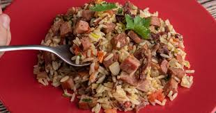

Carreteiro

Ingredients
3 cups rice
500 g dry meat
100 g bacon
200 g calabrian sausage
1 big tomato
1 big onion
pepper
parsley
cumin
Steps
Cook the dry meat under pression for about 20 min.
Heat 1 tablespoon oil in a large pan over medium-high heat.
Sauté the sausage and the bacon, adding the onion until soft and translucent, about 5 minutes.
Add the sliced tomato, the cooked dry meat, pepper and cumin.
Add the rice and water and wait until it is cooked.
Serve with parsley.